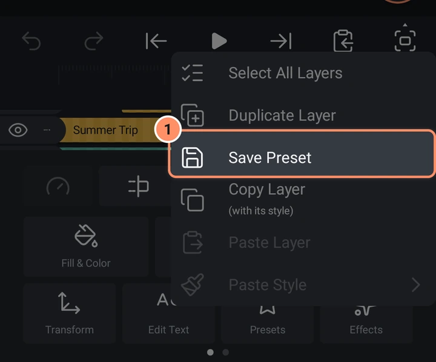

داراییها، قالبها و پریستها
بهترین کار خود را دوباره استفاده کنید: لایهها را بهعنوان دارایی ذخیره کنید، از قالبها شروع کنید و ظاهرهای محبوب خود را بهعنوان پریست نگه دارید.
AbsentMotion سه راه برای استفاده دوباره از کار دارد. آنها در چیزی که نگه میدارند متفاوتند.
| نگه میدارد | استفاده از | |
|---|---|---|
| دارایی | یک لایه یا یک انیمیشن کامل، مرتبط با منبع خود | منوی افزودن، Object / Asset |
| قالب | یک پروژه کامل با جاهایی که رسانه خود را در آنها جایگزین میکنید | منوی افزودن، Template؛ صفحه اصلی، Templates |
| پریست | ظاهر و حرکت یک لایه (افکتها، کیفریمها، حاشیه، حالت ترکیب و بیشتر) | شبکه ابزار، Presets |
داراییها
ساخت یک دارایی
- در ویرایشگر، یک لایه یا گروه را انتخاب کنید و در منوی لایه Save to My Assets را بزنید. پیامی میگوید «Saved to My Assets».
- در صفحه اصلی، در برگه پروژه جدید ASSET را انتخاب کنید و انیمیشن را در پروژه خودش بسازید. پروژه دارایی پسزمینه شفاف دارد.

داراییها زیر چیپ Assets در صفحه اصلی ظاهر میشوند.
استفاده از یک دارایی
Add، Object / Asset، Asset / Project داراییهای شما را (جدیدترین اول) فهرست میکند، سپس پروژههای دیگرتان را، با یک جعبه جستجو. یکی را بزنید تا بهعنوان یک گروه در پلیهد درج شود. یک دارایی مرتبط با دارایی منبع خود میماند. پروژهای که اینگونه درج شود در عوض یک کپی مستقل ساده است.
یک لایه مرتبط ابزار Asset Properties را با دو دکمه دارد.
- Open original Asset پروژه خود دارایی را باز میکند تا بتوانید آن را تغییر دهید. اگر آن پروژه حذف شده باشد، برنامه Rebuild Source Project (ساختن یک پروژه از این لایه) یا Unlink from Asset را پیشنهاد میدهد.
- Unlink from Asset لایه را به یک گروه معمولی تبدیل میکند که میتوانید آزادانه ویرایش کنید.
پروژههای دارایی
درون یک پروژه دارایی، برگه تنظیمات پروژه دو ردیف دیگر دارد.
- Precompose برای دارایی Adaptive Resolution یا Locked Resolution را انتخاب میکند.
- Re-timing تصمیم میگیرد وقتی دارایی روی کلیپی طولانیتر از طول خودش قرار میگیرد چه اتفاقی بیفتد: Freeze (نگهداشتن آخرین فریم بخش میانی)، Stretch، Loop، Repeat & Stretch یا Blank (چیزی پس از طول خودش نیست).
منوی کپی و جایگذاری هم Set intro end و Set outro start را میگیرد. آنها پرچمهای طلایی روی خطکش میگذارند: بخش پیش از پایان اینترو و پس از شروع اوترو سرعت واقعی خود را نگه میدارد در حالی که بخش میانی کشیده، حلقهای یا فریز میشود.
قالبها
یک قالب یک پروژه تمامشده است که در آن هر تصویر یا ویدیو یک جای خالی قابل جایگزینی است.
استفاده از یک قالب
- در صفحه اصلی صفحه Templates و چیپ My Templates را باز کنید و یک قالب را بزنید. از داخل ویرایشگر میتوانید در عوض از Add، Template استفاده کنید.
- صفحه Use Template یک پیشنمایش و یک ردیف Media slots نشان میدهد. یک جای خالی را بزنید تا انتخاب شود (پلیهد به جایی که شروع میشود میپرد)، سپس دوباره بزنید تا عکس یا ویدیوی خودتان را انتخاب کنید.
- آیکون گوشه روی یک جای خالی نحوه مقیاسبندی رسانه را تغییر میدهد: fill، fit یا stretch.
- اگر ویدیوی شما از جای خالی طولانیتر است، صفحهای با عنوان Drag across to select به شما اجازه میدهد انتخاب کنید کدام بخش استفاده شود. اگر کوتاهتر است، آخرین فریم نگه داشته میشود و برنامه به شما میگوید.
- Next را بزنید و سپس Go to Timeline. یک پروژه جدید ساخته میشود. خود قالب هرگز تغییر نمیکند.
Open as project در منوی یک قالب از صفحه جایگزینی رد میشود و فوراً یک پروژه جدید میسازد. قالبها از همان منو میتوانند تغییر نام داده و حذف شوند.
ساخت یک قالب
- کلید Also keep a copy as a Template را در صفحه خروجی پیش از خروجی گرفتن روشن کنید. پروژه را با رسانههایش در Templates روی این گوشی نگه میدارد، و پس از موفقیت خروجی اجرا میشود.
- بستههایی که از ویرایشگرهای دیگر وارد میکنید بهعنوان قالب میآیند: Projects, backup and import را ببینید.
پریستها
یک پریست ظاهر یک لایه را نگه میدارد تا بتوانید آن را روی لایه دیگری بگذارید.
ذخیره یک پریست
لایه را انتخاب کنید و Save Preset را در منوی کپی و جایگذاری بزنید (دکمه ششم نوار پخش). فقط زمانی در دسترس است که لایه چیزی برای نگهداشتن داشته باشد: یک استروک، حاشیه یا سایه، افکتها، حالت ترکیب غیر از Normal، شفافیت تغییر یافته، موقعیت یا اندازه متحرک، ولوم یا سرعت تغییر یافته، یا فونت تغییر یافته. پس از ذخیره، میتوانید Name it کنید.

استفاده از یک پریست
لایه دیگری را انتخاب کنید و Presets را در شبکه ابزار بزنید. صفحه Try a Preset لایه را بهتنهایی با پریست اعمالشده نشان میدهد. یک پریست را بزنید تا امتحان شود، پیشنمایش را برای پخش بزنید، و Apply را برای نگهداشتن بزنید. هر پریست Rename و Delete را در منوی خود دارد.
یک پریست حاشیه، سایه، حالت ترکیب و شفافیت، ترنسفورم متحرک، افکتها، سبک متن (متن به متن)، ولوم و افکتهای صدا (صدا به صدا) و سرعت (کلیپ به کلیپ) را جایگزین میکند. پرشدگی رنگ، شکل، محتوا یا زمانبندی را تغییر نمیدهد.
هیچ پریست از پیش ساختهای وجود ندارد: فقط آنهایی که شما ذخیره میکنید. آنها در صفحه اصلی زیر Templates، My Presets فهرست میشوند، جایی که میتوانید تغییر نام داده و حذفشان کنید.
پریستها در پریستهای من
هر کارت در پریستهای من پریست را روی یک جایگزین نشان میدهد تا ببینید روی چیزی چه شکلی دارد. پریست متن، متن خودش و پریست شکل، شکل خودش را نشان میدهد. پریست تصویر یا ویدیو بهجای رسانهی شما یکی از تصاویر نمونهی برنامه را نشان میدهد که برای هر پریست یک بار بهصورت تصادفی انتخاب میشود تا کارتها متفاوت به نظر برسند. اگر پریست جایگزین مخصوص خودش را دارد (هنگام اشتراکگذاری آن را انتخاب کردهاید یا از انجمن آمده است)، کارت همان را نشان میدهد.
اشتراکگذاری پریست در انجمن
در منوی پریست در پریستهای من، اشتراکگذاری در انجمن را انتخاب کنید (در رایانه، منو یا کلیک راست روی کارت). همان صفحهی بستهی انجمن باز میشود: عنوان (نام پریست)، توضیحات، حداکثر 8 برچسبها، ساختهشده توسط، دو کادر تیک و ذخیره در.
- جایگزین مشخص میکند دیگران پریست را روی چه چیزی ببینند، با پیشنمایش زنده: تصویر تصادفی (یکی از تصاویر نمونهی برنامه؛ بر زدن تصویر دیگری انتخاب میکند) یا انتخاب تصویر یا ویدیو… (مال خودتان). پریست متن یا شکل با متن خودش یا شکل خودش شروع میشود.
- فایل یک بستهی معمولی
.absprojاست که بهعنوان پریست علامتگذاری شده و حداکثر 20 MB است. شامل پریست، جایگزین آن و فونتهای پریست متن است. عکسها و ویدیوهایی که پریست روی آنها ساخته شده هرگز اضافه نمیشوند. - باز کردن چنین فایلی در گوشی، انداختن آن روی برنامهی رایانه یا انتخاب آن با وارد کردن، آن را همراه با جایگزینش به پریستهای من اضافه میکند و «به پریستهای من اضافه شد» را نشان میدهد؛ پروژه نمیسازد. افزودن به پریستهای من در زبانهی انجمن همین کار را میکند.